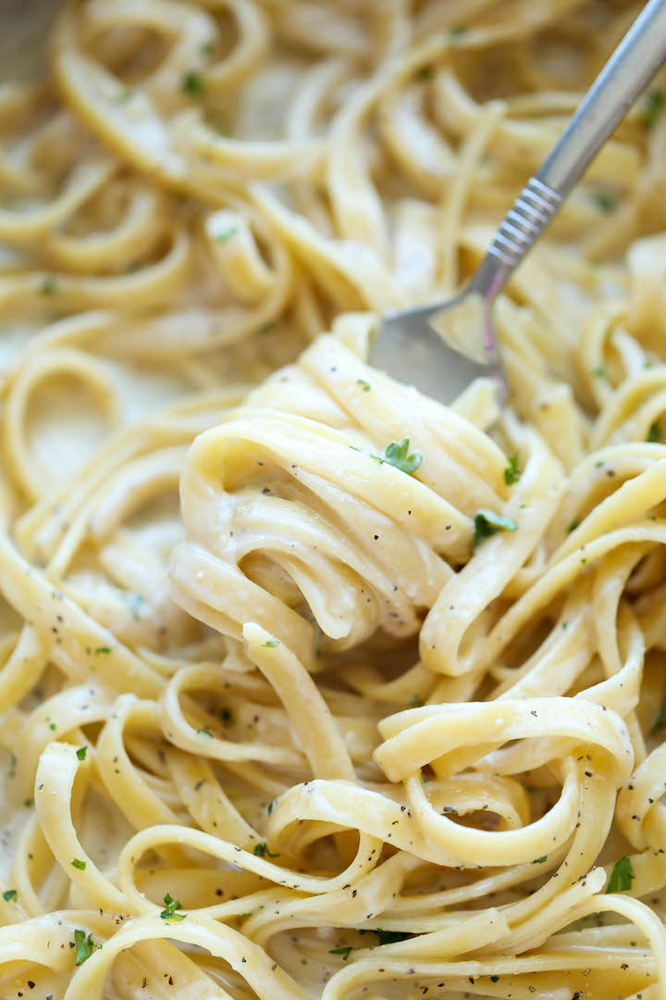

One-Pot Garlic Parmesan Pasta

Description
This is a condensed version of a recipe that can be found on Damn Delicious.
Ingredients
- 2 tablespoons unsalted butter
- 4 cloves garlic
- 2 tablespoons fresh parsley
- 1/4 cup grated parmesan cheese
- 1 cup milk
- 2 cups chicken broth
- 8 oz fettuccine
- Salt, to taste
- Pepper, to taste
Steps
Prep Work
- Mince garlic
- Chop parsley
Directions
- Heat unsalted butter in a large skillet over medium high heat
- Add garlic and cook, stirring frequently, until fragrant, about 1-2 minutes
- Add in the chicken broth, milk, and fettuccine
- Season with salt and pepper
- Bring the pot to a boil, then reduce heat and simmer, stirring occasionally, until pasta is cooked through, about 18-20 minutes
- Stir in Parmesan. If the mixture is too thick, add more milk as needed until desired consistency is reached
- Serve immediately, top with parsley